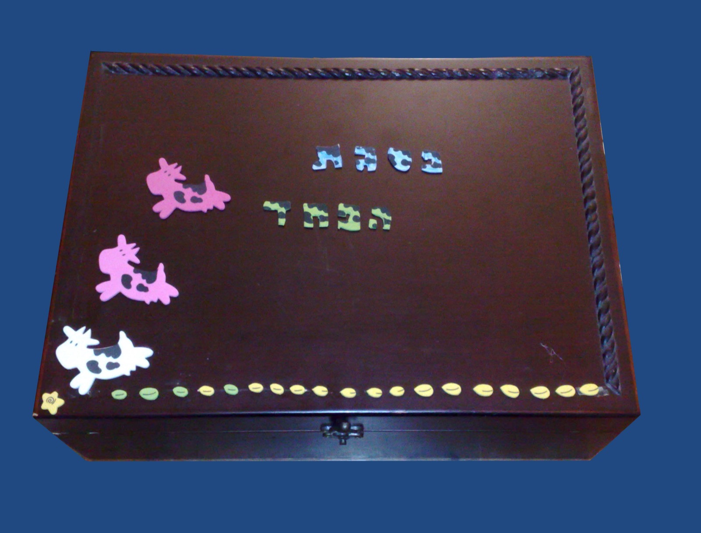
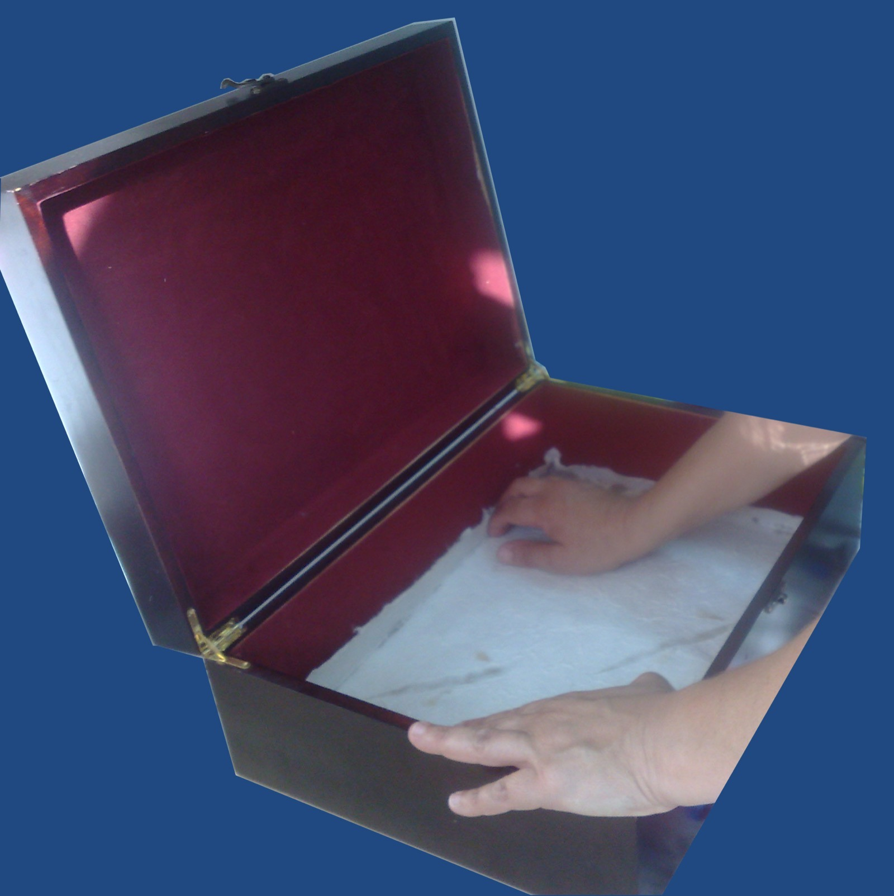
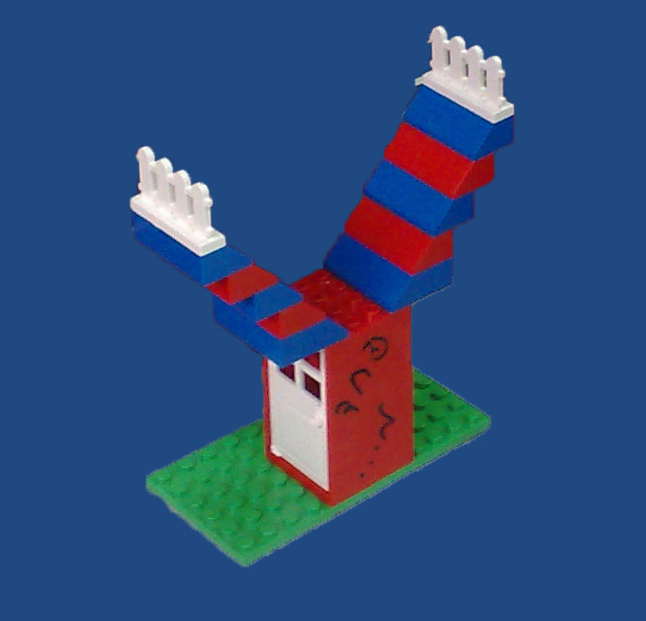
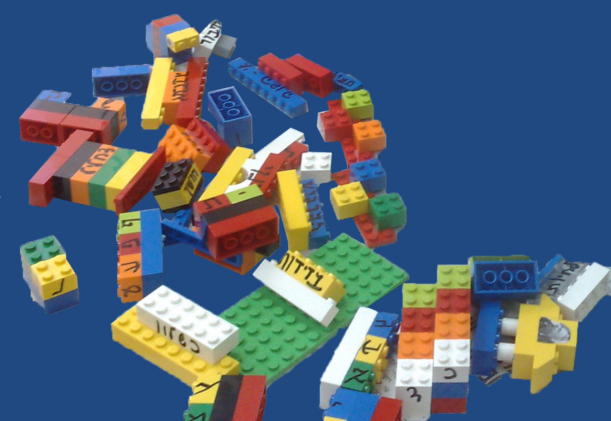
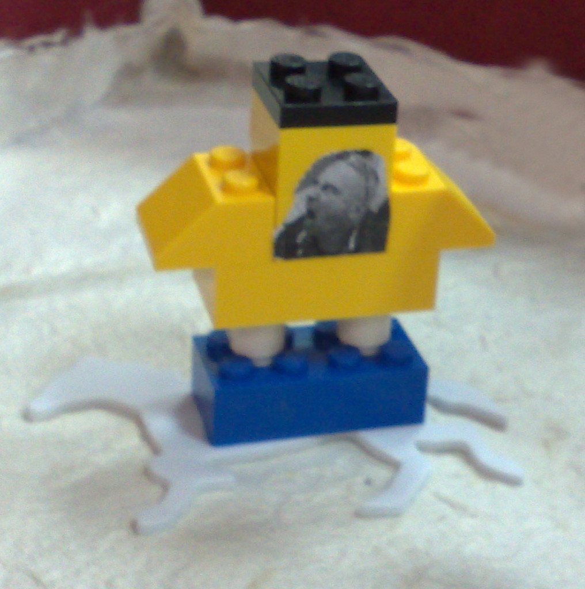
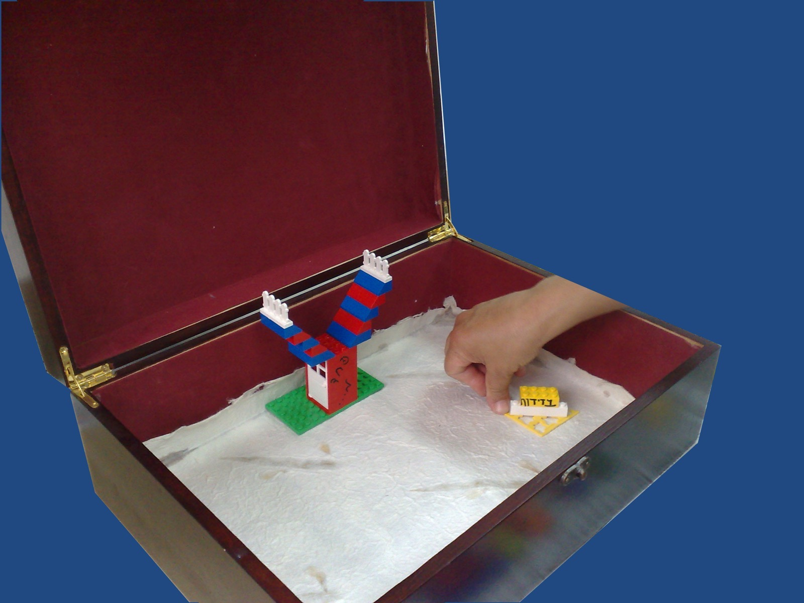
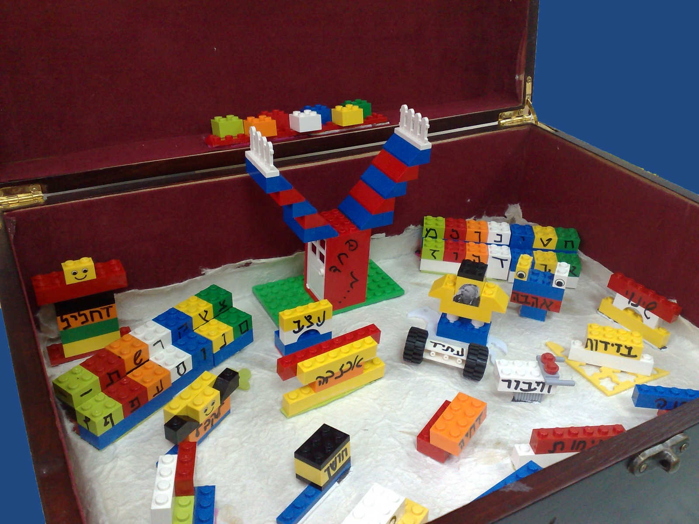
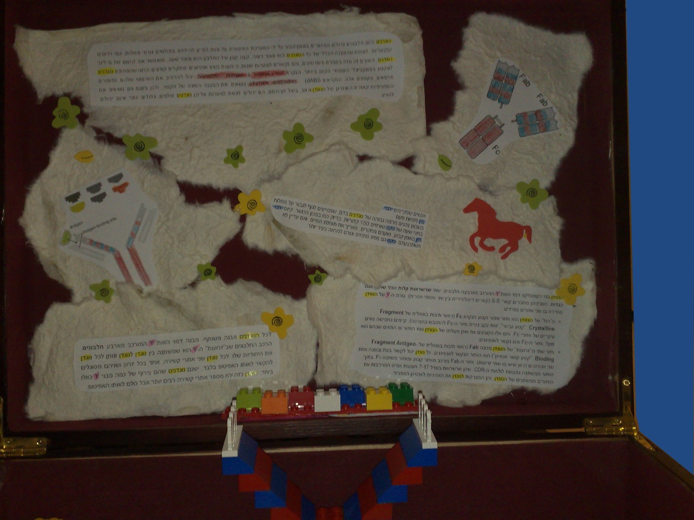
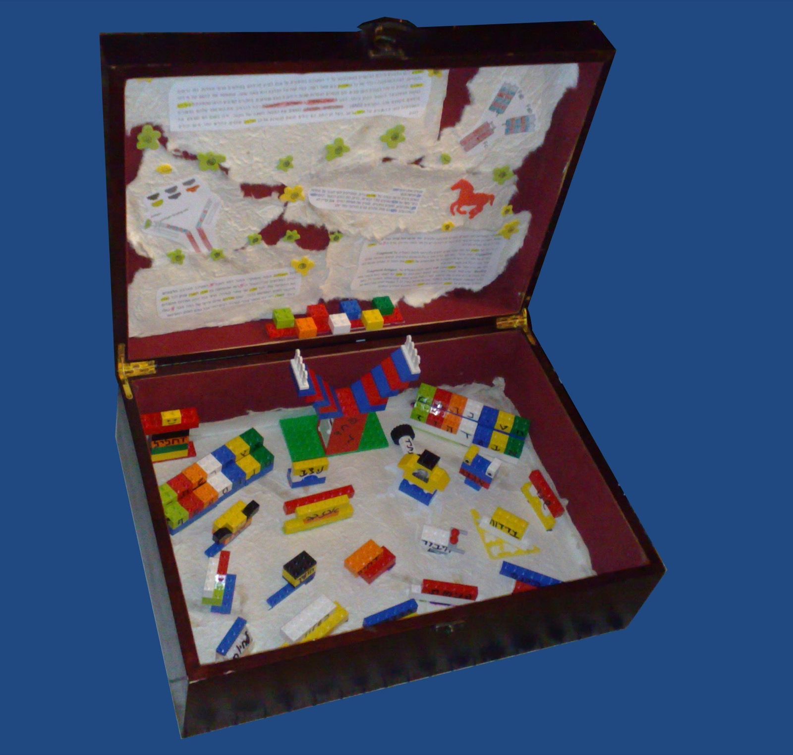
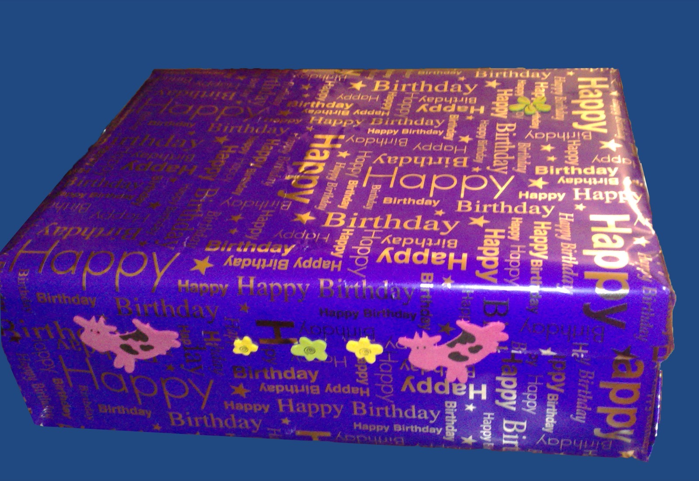

פסגת הפחד

קהל יעד:
מתנה זו נועדה לומר למקבל המתנה שאל לו לחשוש מדבר, ובעצם מעניקה לו משהו מוחשי להתנגד לפחד.
הרעיון מבוסס על מערכת החיסון שלנו, כשם שבה קיים בסיס שממנו נוצר נוגדן ספציפי עבור מחלות שונות כך גם בנויה המתנה.
מצרכים:
- קופסא
- לגו או פלסטלינה
- טוש לא מחיק
- דפי הסבר על נוגדן ותפקידו (ברמה הבסיסית) – ניתן להוציא מהאינטרנט: הסברים, תמונות וכד'
- דבק
אופן ההכנה:
הכנת קופסאת הבסיס:
ראשית יש להכין את קופסאת הבסיס שאליה יוכנסו הנוגדן ורכיביו. חשוב לבחור קודם את הקופסא כדי להכין לאחר מכן רכיבים שיתאימו לגודל הקופסא.
על מנת לאפשר עבודה נוחה עם הקופסא ניתן להדביק עליה נייר ממוחזר כך שהיא תקבל גוון אחיד וכמו כן תאפשר הדבקה קלה יותר של הלגו / פלסטלינה המהווים את הנוגדים.

הכנת רכיבי הנוגדן:
רצוי לקרוא מעט על נוגדנים כדי להבין את העקרון העומד מאחורי המתנה. כאמור בגוף יש את בסיס הנוגדן שהוא במעין צורת Y ועליו מתלבשים הנוגדנים הספציפיים, על בסיס הרעיון הזה יבנה תוכן הקופסא.
בעזרת הלגו / פסטלינה, יש להכין את בסיס הנוגדן בצורת Y, עליו יש לכתוב שהוא מהווה את בסיס הנוגדן בצורה זו או אחרת. (אני בחרתי ב"פחד מ…"). חשוב: קצות בסיס הנוגדן צריכים להיות כאלה שניתן לחבר אליהם חלקים, שהרי עליהם יורכבו הנוגדנים הספציפים.

יצירת נוגדנים ספציפיים:
באמצעות הלגו/ פלסטלינה ליצור את הנוגדנים שניתן להלביש על בסיס הנוגדן. יש להרכיב חלקים שונים כיד הדמיון הטובה עליכם, כאן המקום להביע את מהות המתנה לאדם הייחודי שלו נותנים אותה, ניתן ואף רצוי להכניס דברים היתוליים, לדוגמא אם האדם שלו ניתנת המתנה "מפחד" ממישהו גדול ממנו, ברמת החברות וכד', ניתן להדביק תמונות, עזרים וכל דבר שמקבל המתנה יכול להבין, ואפשר פשוט לכתוב מהי מהות הנוגדן.

רכיב עם תמונה של מישהו "מאיים" – חבר של מקבל המתנה במקרה זה שהוא גדול ומפחיד (:

עיצוב תכולת הקופסא:
את כל הרכיבים להדביק בקופסא, על פי סדר "אקראי" – כאן המקום שלכם לעצב את הקופסא על פי גודלה, תכולתה וכו'.

שימו לב: בנוסף לבסיס הנוגדן ונוגדנים ספציפים, יש לאפשר למקבל המתנה "להרכיב נוגדים לפחדים שלו", לכן יש לשים את כל אותיות ה א' ב' – להרכבת מילים. אני שמתי גם קוביות ריקות, כדי לאפשר לכתוב מילים בעלות אותיות זהות – אכן "הכל" ברמה הסמלית, אבל כל הרכיבים האלה יחד מקנים למתנה את שלמותה.

עיצוב מכסה הקופסא הפנימי:
חיפוש בסיסי באנטנרט ינפיק דפי הסבר ותמונות המספיקים למטרה זו. הדפסה, גזירה, הדבקה, צביעה, והכנה להדבקה על גבי חלקו הפנימי של המכסה.
לאחר עיצוב ההסברים, ניתן להדביק אותם על נייר ממוחזר שאותו קל להדביק על מכסה הקופסא בדומה לבסיס הקופסא.
הדבקת הרכיבים על המכסה הפנימי של הקופסא, ניתן כמובן לקשט ככל העולה על רוחכם.

עיצוב חיצוני של הקופסא:
עיצובה החיצוני של הקופסא רצוי שיהא מינימאלי, כך שרק ירמוז על הנעשה בתוכה, אבל לא יעיד על מהותה. מקבל המתנה במקרה זה אוהב מאד פרות ולכן בחרתי בעיצוב זה.
התוצר הסופי:
תכולת הקופסא בסיום (:

💙 לעטוף ולתת באהבה 💙
